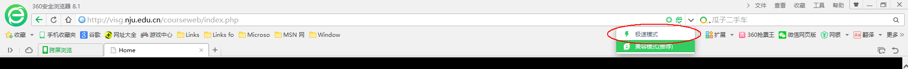
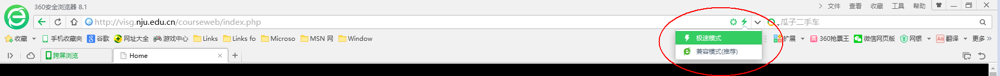

双核浏览器，就是有两个内核的浏览器。由于IE浏览器在国内的普及率非常高，所以造成了很多网上银行和支付系统只支持IE的Trident内核，其他浏览器访问根本无法进行正常支付和转账等业务。
而WebKit内核的非IE浏览器以更高的性能和更好的用户体验拥有了越来越多的用户。(摘自百度百科)
以360安全浏览器为例，教你如何切换浏览器内核：
1. 360浏览器的切换按钮在地址栏的右边（各家浏览器并不完全一致）

2. 点击并选择极速模式
3. 完成！
后话：ie内核的浏览器对真正的网页标准支持很差，尤其是对最新的HTML5，同时存在很多安全问题。
拥抱HTML5，拥抱未来，早日抛弃ie内核。